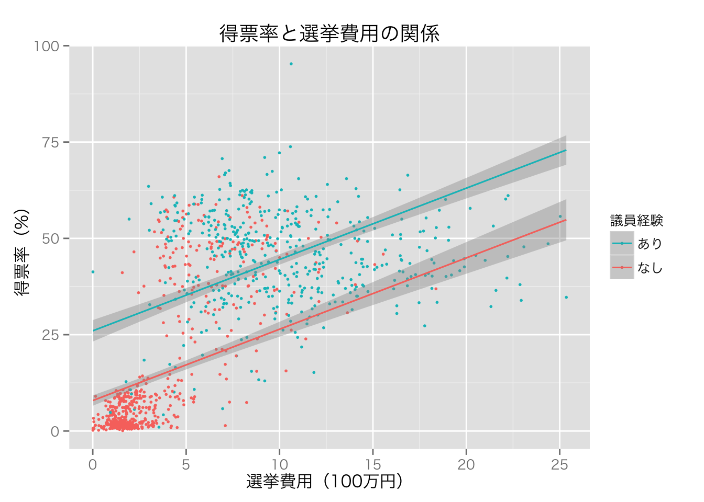

政治学方法論 I：線形回帰分析（1）
矢内 勇生
November 1, 2014 (rev. June 6, 2015)
準備
まず、必要なパッケージを読み込む。
library("foreign")
library("dplyr")
library("arm")
library("ggplot2")
## Windows ユーザは次の行をコメントアウト
theme_set(theme_gray(base_size = 12, base_family = "HiraKakuProN-W3"))説明のために『Stataによる計量政治学』（浅野正彦, 矢内勇生. 2013）で使用されているデータ（hr96-09.dta） を使う。 まず、このデータを読み込む（データへのパスは各自の状況に応じて変えること。ここでは、RStudioのプロジェクトを利用していて、プロジェクトが存在するフォルダ内にdata という名前のフォルダがあり、その中にデータセットが保存されていると仮定している）。
HR <- read.dta("data/hr96-09.dta")
#head(HR)
#tail(HR)衆議院議員経験があることを表すダミー変数と選挙費用を100万円単位で測定する変数を作る。
HR <- mutate(HR,
experience = as.numeric(status == "incumbent" | status == "moto"),
expm = exp / 10^6)2009年の結果だけ抜き出し、HR09として保存する。
HR09 <- filter(HR, year==2009)Rで線形回帰分析を行う
説明変数が二値しかとらないとき（モデル1）
得票率（応答変数）を議員経験（説明変数）で説明するモデルを考えよう。 議員経験は、現職または元職の候補者なら1、そうでなければ0をとる二値 (binary) 変数（ダミー変数）である。 このモデルを式で表すと、 \[得票率_i \sim \mathrm{N}(\beta_1 + \beta_2 \cdot 議員経験_i, \sigma^2)\] と、なる。
Rでは、lm() で回帰式を求める。
fit.1 <- lm(voteshare ~ experience, data = HR09)これで、fit.1 に推定結果（係数の推定値など）が保存される。
基本的な結果は、summary() で見ることができる。
summary(fit.1)##
## Call:
## lm(formula = voteshare ~ experience, data = HR09)
##
## Residuals:
## Min 1Q Median 3Q Max
## -43.843 -12.134 -5.484 8.707 52.016
##
## Coefficients:
## Estimate Std. Error t value Pr(>|t|)
## (Intercept) 13.9840 0.6221 22.48 <2e-16
## experience 30.8589 0.9832 31.39 <2e-16
##
## Residual standard error: 16.26 on 1137 degrees of freedom
## Multiple R-squared: 0.4642, Adjusted R-squared: 0.4637
## F-statistic: 985 on 1 and 1137 DF, p-value: < 2.2e-16この結果は少し読みにくいので、代わりにarm パッケージのdisplay() を利用しよう。
display(fit.1)## lm(formula = voteshare ~ experience, data = HR09)
## coef.est coef.se
## (Intercept) 13.98 0.62
## experience 30.86 0.98
## ---
## n = 1139, k = 2
## residual sd = 16.26, R-Squared = 0.46この出力の、coef.est の列に係数の推定値 (coefficient estimates) が示されている。 これにより、\(\hat{\beta}_1=\) 13.98, \(\hat{\beta}_2=\) 30.86, \(\hat{\sigma}=\) 16.26 が得られた。 したがって、 \[\widehat{得票率} = 13.98 + 30.86 \cdot 議員経験\] と、なる。
この結果を図示しよう。
p1 <- ggplot(HR09, aes(x = experience, y = voteshare)) +
scale_x_continuous(breaks = c(0,1))
p1 <- p1 + geom_jitter(position = position_jitter(width = 0.05), size = 1)
p1 <- p1 + geom_smooth(method = "lm", se = FALSE) +
xlab("議員経験") + ylab("得票率（%）")
print(p1 + ggtitle("得票率と議員経験の関係"))この図に推定の不確実性を示すには、geom_smooth(method = 'lm', se =TRUE) とすればよい（が、 se=TRUE は規定値なので、seを指定する必要はない）。 規定値では、95パーセント信頼区間が回帰直線の周りに表示される。
p1.ci95 <- p1 + geom_smooth(method = "lm")
print(p1.ci95 + ggtitle("得票率と議員経験の関係"))信頼度を変えたいとき、例えば50パーセント信頼区間を表示したいときは、次のようにlevelを指定する。
p1.ci50 <- p1 + geom_smooth(method = "lm", level = .5)
print(p1.ci50 + ggtitle("得票率と議員経験の関係"))この直線の切片である13.98は、議員経験がない候補者の平均得票率（予測得票率）である。 予測値の式の「議員経験」に0を代入すれば、これは明らかである。 議員経験がある候補者の平均得票率（予測得票率）は、「議員経験」に1を代入することで得られる。 代入してみると、\(13.98 + 30.86 \cdot 1 = 44.84\) となる。
Rで議員経験ごとに平均得票率を求め、上の式から求めた予測値と一致するか確かめよう。
HR09 %>%
filter(experience == 0) %>%
with(mean(voteshare)) %>%
round(2)## [1] 13.98HR09 %>%
filter(experience == 1) %>%
with(mean(voteshare)) %>%
round(2)## [1] 44.84このように、予測値は説明変数の値を与えられたときの、応答変数の平均値であることがわかる。
説明変数が連続値をとるとき（モデル2）
同様に、得票率を選挙費用（測定単位：100万円）で説明するモデルは、次のように推定できる。
fit.2 <- lm(voteshare ~ expm, data = HR09)
display(fit.2)## lm(formula = voteshare ~ expm, data = HR09)
## coef.est coef.se
## (Intercept) 7.74 0.76
## expm 3.07 0.10
## ---
## n = 1124, k = 2
## residual sd = 16.04, R-Squared = 0.48回帰直線を図示する。
p2 <- ggplot(HR09, aes(x = expm, y = voteshare)) + geom_point(size = 1)
p2 <- p2 + geom_smooth(method = "lm", se = FALSE)
p2 <- p2 + xlab("選挙費用（100万円）") + ylab("得票率（%）")
print(p2 + ggtitle("得票率と選挙費用の関係"))95パーセント信頼区間を加える。
p2.ci95 <- p2 + geom_smooth(method = "lm")
print(p2.ci95 + ggtitle("得票率と選挙費用の関係"))複数の説明変数を使った回帰（モデル3）
次に、得票率を議員経験と選挙費用で説明するモデルに最小二乗法を当てはめる。
fit.3 <- lm(voteshare ~ experience + expm, data = HR09)
display(fit.3)## lm(formula = voteshare ~ experience + expm, data = HR09)
## coef.est coef.se
## (Intercept) 7.91 0.69
## experience 18.10 1.23
## expm 1.85 0.12
## ---
## n = 1124, k = 3
## residual sd = 14.69, R-Squared = 0.56この結果を図示する。
## 予測値のデータフレームを作る
pred <- with(HR09, expand.grid(
expm = seq(min(expm, na.rm=TRUE), max(expm, na.rm=TRUE), length = 100),
experience = c(0,1)
))
## 予測値を計算する
pred <- mutate(pred, voteshare = predict(fit.3, newdata = pred))
## 散布図 (point) は元データ (HR09) で描き、回帰直線は予測値 (pred) で描く
p3 <- ggplot(HR09, aes(x = expm, y = voteshare, color = as.factor(experience))) +
geom_point(size = 1) +
geom_line(data = pred)
p3 <- p3 + labs(x = "選挙費用（100万円）", y = "得票率（%）")
p3 <- p3 +
scale_color_discrete(name = "議員経験", labels = c("なし","あり")) +
guides(color = guide_legend(reverse = TRUE))
print(p3 + ggtitle("得票率と選挙費用の関係"))この図からわかるように、このモデルは2つの直線が平行になる（傾きが同じになる）ように設定されている。
この図に95パーセント信頼区間を加える。 信頼区間を求めるために標準誤差を利用する。 また、標準誤差は\(t\) 分布に従うので、qt() で分布の95%が収まる範囲を求める （標準正規分布で近似し、\(\pm 1.96\) を使っても結果に大きな違いはないが、せっかくRを使っているのだから、より正確な数値を利用したほうがよい）。
## 信頼区間の下限と上限を計算する
## まず、予測値と標準誤差を求める
err <- predict(fit.3, newdata = pred, se.fit = TRUE)
## 予測値と標準誤差を使って信頼区間を求める
pred$lower <- err$fit + qt(0.025, df = err$df) * err$se.fit
pred$upper <- err$fit + qt(0.975, df = err$df) * err$se.fit
p3.ci95 <- p3 +
geom_smooth(data = pred, aes(ymin = lower, ymax = upper), stat ="identity")
print(p3.ci95 + ggtitle("得票率と選挙費用の関係"))
相互作用を考える（モデル4）
モデル3では回帰直線が平行になるようにモデルを制限していたが、この制限を緩めてみよう。 そのために、議員経験 \(\times\) 選挙費用という説明変数を追加する。
Rでは、lm() 内の説明変数に、変数A * 変数B と書くと、変数A、変数B、変数A \(\times\) 変数B を説明変数として加えてくれるので、これを利用する。
fit.4 <- lm(voteshare ~ experience * expm, data = HR09)
display(fit.4)## lm(formula = voteshare ~ experience * expm, data = HR09)
## coef.est coef.se
## (Intercept) -2.07 0.72
## experience 45.91 1.58
## expm 4.87 0.16
## experience:expm -4.76 0.21
## ---
## n = 1124, k = 4
## residual sd = 12.11, R-Squared = 0.70この結果を図示する。

95パーセント信頼区間を加える。
p4.ci95 <- p4 + geom_smooth(method = "lm")
print(p4.ci95 + ggtitle("得票率と選挙費用の関係"))シミュレーションで回帰分析を理解する
回帰分析のしくみ（特に信頼区間の意味）を理解するために、簡単なモンテ・カルロシミュレーションを行おう。 シミュレーンでは、自分で母数を設定し、データを生成する。 そのうえで、特徴を知りたい分析手法（今回の場合はOLS）を生成したデータに当てはめ、母数をうまく推測できるかどうか確認する。
今回は、単回帰を例にシミュレーションを行う（重回帰のシミュレーションは課題で）。 このシミュレーションを行う主な目的は以下の3つである。
- 最小二乗法（OLS）が想定するデータ生成過程 (data generating process) を理解する
- 最小二乗推定量（OLSE）の基本的な性質を理解する
- 信頼区間の意味を理解する
単回帰モデルは \[y \sim \mathrm{N}(X\beta, \sigma^2 I)\] または、 \[y_i \sim \mathrm{N}(\beta_1 + \beta_2 x_i, \sigma^2)\] (\(i = 1, 2, \dots, n\))と表すことができる。 したがって、設定する母数は3つある。
beta1 <- 10 ## 切片の値を決める
beta2 <- 3 ## 傾き（説明変数の係数）を決める
sigma <- 6 ## 誤差の標準偏差を決める次に、単回帰モデルが想定するデータ生成過程に従って、データを生成する。
n <- 100 ## サンプルサイズを決める
## x ~ U(0, 10) とする：他の設定でもかまわない
x <- runif(n, 0, 10) ## 最小値0, 最大値10の一様分布から長さnのxベクトルを抽出する
y <- rnorm(n, beta1 + beta2 * x, sd = sigma) ## 設定に従って、yを正規分布から抽出するここで、手に入れたデータを散布図にして直線を当てはめてみよう。
df <- data.frame(y=y, x=x)
scat <- ggplot(df, aes(x, y)) + geom_point() + geom_smooth(method = "lm")
print(scat)回帰式を推定すると、
eg.1 <- lm(y ~ x, data = df)
display(eg.1)## lm(formula = y ~ x, data = df)
## coef.est coef.se
## (Intercept) 9.14 1.28
## x 3.10 0.22
## ---
## n = 100, k = 2
## residual sd = 6.29, R-Squared = 0.683つの母数\(\beta_1=10, \beta_2=3, \sigma=6\) に対する推定値は、それぞれ9.14, 3.1, 6.29 であることがわかる。
このとき、係数の95パーセント信頼区間は、
confint(eg.1)## 2.5 % 97.5 %
## (Intercept) 6.602367 11.686254
## x 2.672670 3.526034で求められる。 95パーセント信頼区間は、切片が[6.60, 11.69]、傾きが[2.67, 3.53] であり、どちらの信頼区間も母数を含んでいる。 つまり、ここで得られた信頼区間が母数を含む確率は1（100%）である！
以上の過程を、母数とサンプルサイズは変えずに何度も繰り返す。 同じコードを何度も繰り返し使うのは面倒なので、関数にしてしまおう。
sim_ols1 <- function(beta, sigma, n = 100, trials = 10000, x.rng = c(0,10)) {
## Function to simulate simple OLS regressions
## Arguments:
## beta: vector of coefficient parameters
## sigma: standard deviation of the error
## n: sample size, default n=100
## trials: the number of simulation trials
## default trials=10000
## x.rng: range of the explanatory variable x
## default x.rng=c(0,10)
## Return:
## df: data frame containing
## (1) parameter estimates,
## (2) se of coefficient estimates, and
## (3) 95% CI of coefficient estimates
## for each trial of the simulation.
## create a data frame to save the results
empty <- rep(NA, trials)
df <- data.frame(
b1 = empty,
b1.se = empty,
b1.lower = empty,
b1.upper = empty,
b2 = empty,
b2.se = empty,
b2.lower = empty,
b2.upper = empty,
sigma.hat = empty
)
for (i in 1:trials) { ## loop for trials
## generate data
x <- runif(n, x.rng[1], x.rng[2])
y <- rnorm(n, beta[1] + beta[2] * x, sigma)
## fit OLS
fit <- lm(y ~ x)
## sum of squared residuals
sigma.hat <- summary(fit)$sigma
## coefficient estimates
b1 <- coef(fit)[1]
b2 <- coef(fit)[2]
## standard errors of coefficient estimates
b1.se <- sqrt(summary(fit)$cov.unscaled[1,1]) * sigma.hat
b2.se <- sqrt(summary(fit)$cov.unscaled[2,2]) * sigma.hat
## 95% CI
b1.ci95 <- confint(fit)[1,]
b2.ci95 <- confint(fit)[2,]
## save the results
df[i,] <- c(b1, b1.se, b1.ci95,
b2, b2.se, b2.ci95,
sigma.hat)
}
## return the data frame
return(df)
}この関数を利用して、実際にシミュレーションを行ってみよう。 自分で母数とサンプルサイズ（ここでは規定値のn=100を利用）を指定し、データの生成と回帰式の推定を1,000回繰り返すことにする。
beta1 <- 10; beta2 <- 3; sigma = 6
sim.1 <- sim_ols1(beta = c(beta1, beta2), sigma = sigma, trials = 1000)
head(sim.1)## b1 b1.se b1.lower b1.upper b2 b2.se b2.lower
## 1 10.519381 1.333821 7.872455 13.16631 2.840636 0.2276824 2.388807
## 2 9.195160 1.558476 6.102415 12.28790 3.157845 0.2427141 2.676187
## 3 8.675866 1.365326 5.966421 11.38531 3.169810 0.2311890 2.711023
## 4 9.693470 1.422950 6.869673 12.51727 2.911867 0.2347170 2.446079
## 5 8.809144 1.111461 6.603487 11.01480 3.040280 0.2021615 2.639097
## 6 9.211938 1.086019 7.056770 11.36711 3.375313 0.1891709 2.999909
## b2.upper sigma.hat
## 1 3.292464 6.304427
## 2 3.639503 6.559746
## 3 3.628597 6.609825
## 4 3.377655 6.311905
## 5 3.441463 5.704105
## 6 3.750716 5.662732これで、シミュレーションで得られた数字はsim.1に保存された。
係数の推定値を理解する
説明変数 \(x\) の係数の推定値 b2 の分布を確認してみよう。 私たちは母数\(\beta_2=3\)であることを知っているが、OLSはこの数値をうまく推定してくれただろうか？
hist.b2 <- ggplot(sim.1, aes(x = b2, y=..density..)) +
geom_histogram(binwidth = .1)
hist.b2 <- hist.b2 +
labs(y = "確率密度", title = "シミュレーションで得たb2の分布") +
geom_vline(xintercept = 3, color = "violetred")
print(hist.b2)
このヒストグラムが示すように、OLSは平均すると、母数をうまく推定してくれる（不偏性, unbiasedness）。しかし、常に正しい推定をするわけではなく、係数の値を過小推定することもあれば、過大推定することもある。実際の分析では、データセットが1つしかないのが普通であり、自分のデータ分析が係数を「正しく」推定しているとは限らならい。そのために、推定の不確実性を明示することが求められるのである。
標準誤差を理解する
次に、b2の標準誤差をヒストグラムにしてみよう。
hist.se <- ggplot(sim.1, aes(x = b2.se, y =..density..)) +
geom_histogram(binwidth = .01) +
labs(x = "b2の標準誤差", y = "確率密度", title = "b2の標準誤差の分布")
print(hist.se)このように、標準誤差自体が推定量なので、値はサンプルごとに異なる（分布する）。
標準誤差をseとすると、 \[\frac{\hat{\beta} - \beta}{\mathrm{se}}\] は自由度\(n-k\)（ここでは、100-2=98）の\(t\)分布にしたがうはずである。 まず、この値をヒストグラムにして、自由度98の\(t\)分布の確率密度曲線を重ね書きしてみよう。
sim.1 <- mutate(sim.1, b2.t = (b2 - beta2) / b2.se)
## t分布の確率密度を求め、true.tという名前のデータフレームに保存する
true.t <- data.frame(x = seq(-4, 4, length = 100))
true.t <- mutate(true.t, density = dt(x, df = 98))
hist.t <- ggplot(sim.1, aes(x = b2.t, y =..density..)) +
geom_histogram(binwidth = 0.5) +
geom_line(data = true.t, aes(x = x, y = density), color = "violetred")
hist.t <- hist.t +
labs(x = expression(frac(hat(beta) - beta, "se")),
y="確率密度", title="標準化されたb2と自由度98のt分布")
print(hist.t)この図から、\(t\)分布に近い分布であることがわかる。 Q-Qプロットでも確かめてみよう。
qqplot.t <- ggplot(sim.1, aes(sample = b2.t)) +
stat_qq(distribution = qt, dparams = list(df = 98)) +
geom_abline(intercept = 0, slope = 1, color = "violetred") +
labs(title = "Q-Q プロット",
x = "自由度n-k=98のt分布",
y = expression(paste("シミュレートした ", frac(hat(beta) - beta, "se"), " の分布")))
print(qqplot.t)Q-Qプロットの点がほぼ一直線に並んでおり、\((\hat{\beta}-\beta)/\mathrm{se}\)が\(t\)分布に従っていることがわかる。ただし、分布の裾では、理論値との乖離が大きいことに注意が必要である。
今回のシミュレーションで得られた標準誤差の平均値は、
mean(sim.1$b2.se)## [1] 0.209381である。標準誤差は推定値の標準偏差のはずだが、本当にそうなっているかどうか確認してみよう。
sd(sim.1$b2)## [1] 0.2144247これで、実際に標準誤差は推定値の標準偏差に（ほぼ）一致することがわかった。
信頼区間を理解する
係数の推定値b2の95パーセント信頼区間を例として考える。 シミュレーションで得られた1つ目の信頼区間は、
sim.1[1, c("b2.lower", "b2.upper")]## b2.lower b2.upper
## 1 2.388807 3.292464すなわち、[2.39, 3.29] がb2[1] の95パーセント信頼区間である。 この区間は母数である\(\beta_2=3\)を区間内に含んでいる。 したがって、この信頼区間が母数を含む確率は1（100%)である。
同様に、2つ目の信頼区間は、
sim.1[2, c("b2.lower", "b2.upper")]## b2.lower b2.upper
## 2 2.676187 3.639503であり、これも母数を区間内に含んでいる。
しかし、39番目の信頼区間は、
sim.1[39, c("b2.lower", "b2.upper")]## b2.lower b2.upper
## 39 3.025416 3.749442であり、これは母数を区間内に含んでいない。 つまり、この信頼区間が母数を含む確率は0である。
シミュレーションで得た1,000個の信頼区間のうち、どの信頼区間が母数を含んでいるか調べてみよう。 母数を信頼区間内に含むのは、信頼区間の下限値が母数以下かつ上限値が母数以上のものである。
check.ci <- sim.1$b2.lower <= beta2 & sim.1$b2.upper >= beta2この結果、TRUEとなっているものが母数を区間内に捉えているもの、FALSEがそうでないものである。これを表にすると、
table(check.ci)## check.ci
## FALSE TRUE
## 49 951と、なる。つまり、1000個の95パーセント信頼区間のうち、951個（95.1%）は母数を区間内に捉え、残りの49個が捉えないということである。このように、一定のデータ生成過程から得られた異なるデートセットに対し、信頼区間を求める作業を繰り返したとき、「得られた信頼区間のうち何パーセントが母数を区間内に含むか」というのが、信頼区間の信頼度である。
これを図にしてみよう。 1000個は多すぎるので、無作為に100個だけ選んで図示する。
## put IDs on each simulated result
sim.1 <- mutate(sim.1, id = 1:n())
## put check.ci into the data frame
sim.1$check.ci <- check.ci
## randomly choose 100 sets of sim values for graph
sim.1.sml <- sample_n(sim.1, 100)
## show simulated ci's graphically
ctplr <- ggplot(sim.1.sml,
aes(x = reorder(id, b2), y = b2,
ymin = b2.lower, ymax = b2.upper,
color = check.ci)) +
geom_hline(yintercept = beta2, linetype = "dashed") +
geom_pointrange() +
labs(x = "シミュレーションID", y = "b2", title = "95％信頼区間") +
scale_color_discrete(name = "母数を", labels = c("含まない","含む")) +
coord_flip()
print(ctplr)このように、100個中95個（95パーセント）の95パーセント信頼区間が、母数である3にかかっていることがわかる。